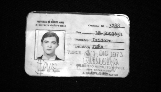
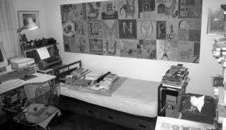
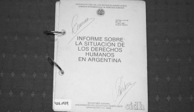
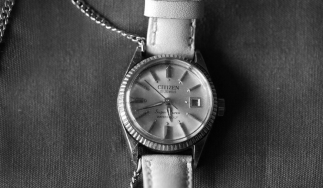
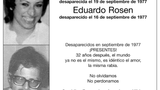

Carnet Isidoro Peña
Militante del Partido Revolucionario de los Trabajadores- Ejército Revolucionario del Pueblo (PRT-ERP)

Cuarto de Memoria
La confrontación entre modelos de sociedad, que dio contenido a la movilización de los años '70, y que culminó con el golpe de Estado de 1976

Derechos Humanos Informe
En 2000, un grupo de organismos de derechos humanos comenzaron a reunirse buscando participar en iniciativas locales y nacionales.
Papeles de Memoria
Desde el 2006, se realiza el primer juicio desde la reapertura de los procesos legales por delitos de lesa humanidad.

Reloj sin Dueño
En los años de impunidad, las marcas en la ciudad tomaron usos y significados particulares, y comenzaron a extenderse territorialmente.

Eduardo Rosen
Identificado por el Equipo Argentino de Antropología Forense (EAAF) en 2005.